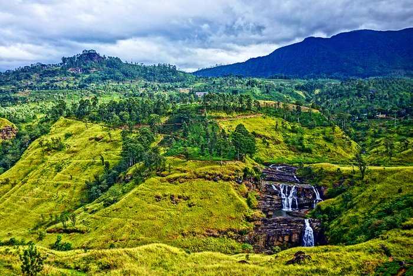

Kandy

This sacred Buddhist site, popularly known as the city of Senkadagalapura, was the last capital of the Sinhala kings whose patronage enabled the Dinahala culture to flourish for more than 2,500 years until the occupation of Sri Lanka by the British in 1815. It is also the site of the Temple of the Tooth Relic (the sacred tooth of the Buddha), which is a famous pilgrimage site.Kandy is a large city in central Sri Lanka. It's set on a plateau surrounded by mountains, which are home to tea plantations and biodiverse rainforest. The city's heart is scenic Kandy Lake (Bogambara Lake), which is popular for strolling. Kandy is famed for sacred Buddhist sites, including the Temple of the Tooth (Sri Dalada Maligawa) shrine, celebrated with the grand Esala Perahera annual procession.
Mathale
Matale, town, central Sri Lanka, 14 miles (23 km) north of Kandy. A Buddhist monastery and rock temple (Aluvihara) are near the town. Matale’s intermediate elevation and moderate rainfall abet the cultivation of spices. It is a cattle centre, and there are extensive tea, rubber, and cacao plantations in the vicinity. Pop. (2007 est.) 30,324.Matale is the administrative capital and largest urbanised centre in the Matale District, Central Province, Sri Lanka. It is located at the heart of the Central Hills of the island and lies in a broad, fertile valley at an elevation of 364 m above sea level.
NuwaraEliya
Dubbed "Little England" due to its cool climate and colonial-era bungalows, Nuriwaya Eliya boasts a landscape far more dramatic than Britain's. Mist-shrouded mountains and terraced tea plantations surround the former hill station, while world-class brews are abundant.Nuwara Eliya is a city in the tea country hills of central Sri Lanka. The naturally landscaped Hakgala Botanical Gardens displays roses and tree ferns, and shelters monkeys and blue magpies. Nearby Seetha Amman Temple, a colorful Hindu shrine, is decorated with religious figures. Densely forested Galway's Land National Park is a sanctuary for endemic and migratory bird species, including bulbuls and flycatchers.
Colombo
Colombo, city, executive and judicial capital of Sri Lanka. (Sri Jayawardenepura Kotte, a Colombo suburb, is the legislative capital.) Situated on the west coast of the island, just south of the Kelani River, Colombo is a principal port of the Indian Ocean. It has one of the largest artificial harbours in the world and handles the majority of Sri Lanka’s foreign trade.Colombo is the commercial capital and largest city of Sri Lanka by population. According to the Brookings Institution, Colombo metropolitan area has a population of 5.6 million, and 752,993 in the Municipality. It is the financial centre of the island and a tourist destination
Kaluthara
Kalutara District is one of the 25 districts of Sri Lanka, the second level administrative division of the country. The district is administered by a District Secretariat headed by a District Secretary appointed by the central government of Sri Lanka. The capital of the district is the town of Kalutara.Kalutara or Kalutota is a major city in Kalutara District, Western Province, Sri Lanka. It is also the administrative capital of Kalutara District.
Gampaha
Gampaha District is one of the 25 districts of Sri Lanka, the second level administrative division of the country. It is the second most populous district of Sri Lanka after Colombo District.Gampaha is an urban city in Gampaha District, Western Province, Sri Lanka. It is situated to the north-east of the capital Colombo. It is the sixth largest urban area in Western Province, after Colombo, Negombo, Kalutara, Panadura and Avissawella.
Jaffna
Jaffna District is one of the 25 districts of Sri Lanka, the second level administrative division of the country. The district is administered by a District Secretariat headed by a District Secretary appointed by the central government of Sri Lanka. The capital of the district is the city of Jaffna.Jaffna is a city on the northern tip of Sri Lanka. Nallur Kandaswamy is a huge Hindu temple with golden arches and an ornate gopuram tower. By the coast, star-shaped Jaffna Fort was built by the Portuguese in the 17th century and later occupied by the Dutch and British. Jaffna Public Library is a symbol of the city’s post-war regeneration. Jaffna Archaeological Museum has Dutch cannons and pre-colonial artifacts.
Kilinochchi
Kilinochchi is the main town of Kilinochchi District, Northern Province of Sri Lanka. Kilinochchi is situated at the A9 road some 100 km (62 mi) south-east of Jaffna. It was the administrative center and de facto capital of the LTTE until 2 January 2009, when troops of the Sri Lankan Army recaptured the city.Kilinochchi is the main town of Kilinochchi District, Northern Province of Sri Lanka. Kilinochchi is situated at the A9 road some 100 km south-east of Jaffna. It was the administrative center and de facto capital of the LTTE until 2 January 2009, when troops of the Sri Lankan Army recaptured the city.
Mannar
Mannar District is one of the 25 districts of Sri Lanka, the second level administrative division of the country. The district is administered by a District Secretariat headed by a District Secretary appointed by the central government of Sri Lanka. The capital of the district is Mannar, which is located on Mannar Island.Mannar is the main town of Mannar District, Northern Province, Sri Lanka. It is governed by an Urban Council. The town is located on Mannar Island overlooking the Gulf of Mannar and is home to the historic Ketheeswaram temple.
Mullaitivu
Mullaitivu is the main town of Mullaitivu District, situated on the north-eastern coast of Northern Province, Sri Lanka. A largely fishing settlement, the town in the early twentieth century grew as an anchoring harbour of the small sailing vessels transporting goods between Colombo and Jaffna.
Vavuniya
Vavuniya is a city in the Northern Province, Sri Lanka, governed by an Urban Council. It is also the main settlement in the Vavuniya District. The Security Forces Headquarters - Wanni is located in Vavuniya.
Trincomalee
Trincomalee District is one of the 25 districts of Sri Lanka, the second level administrative division of the country. The district is administered by a District Secretariat headed by a District Secretary appointed by the central government of Sri Lanka. The capital of the district is the city of TrincomaleeTrincomalee is a port city on the northeast coast of Sri Lanka. Set on a peninsula, Fort Frederick was built by the Portuguese in the 17th century. Within its grounds, the grand Koneswaram Temple stands on Swami Rock cliff, a popular vantage point for blue-whale watching. The holy complex contains ornate shrines and a massive statue of Shiva. Nearby Gokanna Temple has panoramic views over the city and the coastline.
Batticaloa
Batticaloa District ( is one of the 25 districts of Sri Lanka, the second level administrative division of the country. The district is administered by a District Secretariat headed by a District Secretary appointed by the central government of Sri Lanka. The capital of the district is the city of Batticaloa. Ampara District was carved out of the southern part of Batticaloa District in April 1961.Batticaloa is a major city in the Eastern Province, Sri Lanka, and its former capital. It is the administrative capital of the Batticaloa District. The city is the seat of the Eastern University of Sri Lanka and is a major commercial centre.
Ampara
Ampara District is one of the 25 districts of Sri Lanka, the second-level administrative divisions of the country. The district is administered by a District Secretariat headed by a District Secretary appointed by the central government of Sri Lanka. The capital of the district is the town of AmparaAmpara is the main town of Ampara District, governed by an Urban Council. It is located in the Eastern Province, Sri Lanka, about 360 km east of Colombo and approximately 60 km south of Batticaloa.
Hambantota
Hambantota District is a district in Southern Province, Sri Lanka. It is one of 25 districts of Sri Lanka, the second level administrative division of the country. The district is administered by a District Secretariat headed by a District Secretary appointed by the central government of Sri LankaHambantota is the main town in Hambantota District, Southern Province, Sri Lanka. This underdeveloped area was hit hard by the 2004 Indian Ocean tsunami and is undergoing a number of major development projects including the construction of a new sea port and international airport finished in 2013.
Matara
Matara is a district in Southern Province, Sri Lanka. It is one of 25 districts of Sri Lanka, the second level administrative division of the country. The district is administered by a District Secretariat headed by a District Secretary appointed by the central government of Sri LankaMatara is a major city in Sri Lanka, on the southern coast of Southern Province. It is the second largest city in Southern Province. It is 160 km from Colombo. It is a major commercial hub, and it is the administrative capital and largest city of Matara District.
Galle
Galle is a district in Southern Province, Sri Lanka. It is one of 25 districts of Sri Lanka, the second level administrative division of the country. The district is administered by a District Secretariat headed by a District Secretary appointed by the central government of Sri Lanka.Galle is a city on the southwest coast of Sri Lanka. It’s known for Galle Fort, the fortified old city founded by Portuguese colonists in the 16th century. Stone sea walls, expanded by the Dutch, encircle car-free streets with architecture reflecting Portuguese, Dutch and British rule. Notable buildings include the 18th-century Dutch Reformed Church. Galle Lighthouse stands on the fort’s southeast tip.
Badulla
Badulla District is a district in Uva Province, Sri Lanka. The entire land area of the Badulla district is 1,105 sq and has a total population of 837,000. The district is bounded by the districts of Monaragala and Rathnapura on the east and south, by Ampara and Kandy districts to the north and by Nuwara Eliya and Matale to the west. Mainly the economy of the district is based on agricultural farming and livestock. Badulla District is an agricultural district where tea and various vegetables are cultivated. The district is divided into an upper region and a lower region which differ in climatic and geographic characteristics. The upper region of the district is known for tea plantations and vegetable cultivation while the lower region focuses more on paddy farmingBadulla is the capital and the largest city of Uva Province situated in the lower central hills of Sri Lanka. It is the capital city of Uva Province and the Badulla District.
Monaragala
Monaragala is a town located in Monaragala District, Uva Province, Sri Lanka. It is the largest town in Monaragala District and is located 57.3 km southeast of Badulla, the capital city of Uva Province. Monaragala is situated about 151 m above sea level on the Colombo-Batticaloa main road
Kegalle
Kegalle is a district in Sabaragamuwa Province, Sri Lanka. It is one of 25 districts of Sri Lanka, the second level administrative division of the country. The district is administered by a District Secretariat headed by a District Secretary appointed by the central government of Sri Lanka. It was a former Dissavani of Sri Lanka. It covers an area of 654 sq mi. The district has a population of 837,179 according to 2012 Census, which is approximately 4.0% of the total population of Sri Lanka.Kegalle is a large town in Sabaragamuwa Province of Sri Lanka. It is located on the Colombo–Kandy road, approximately 78 km from Colombo and 40 km from Kandy. It is the main town in the Kegalle District, which is one of two districts which comprise Sabaragamuwa Province. The town is governed by an Urban Council.
Ratnapura
Ratnapura is a district of Sri Lanka in the Sabaragamuwa Province. The gem-mining centre of Sri Lanka is also a major crossroad between southern plains and the hill country to the east. A bustling market city servicing most of the surrounding towns. Many of the prominent gem dealers in Sri Lanka operate from this town. There is a route to Sri Pada from Ratnapura direction. Excursions include Sinharaja Forest Reserve and Udawalawe National Park. The surrounding area is a popular trekking destination and a good place for bird watchinRatnapura is a major city in Sri Lanka. It is the capital city of Sabaragamuwa Province, as well as the Ratnapura District, and is a traditional centre for the Sri Lankan gem trade. It is located on the Kalu Ganga in south-central Sri Lanka, some 101 km southeast of the country's capital, Colombo
Anuradhapura
Anuradhapura is a major city in Sri Lanka. It is the capital city of North Central Province, Sri Lanka and the capital of Anuradhapura District. Anuradhapura is one of the ancient capitals of Sri Lanka, famous for its well-preserved ruins of an ancient Sinhala civilization. It was the third capital of the kingdom of Rajarata, following the kingdoms of Tambapanni and Upatissa Nuwara. The city, now a World Heritage Site, was the centre of Theravada Buddhism for many centuries. The city lies 205 km (127 mi) north of the current capital of Colombo in the North Central Province, on the banks of the historic Malvathu River. It is one of the oldest continuously inhabited cities in the world and one of the eight World Heritage Sites of Sri Lanka.Anuradhapura is a major city in Sri Lanka. It is the capital city of North Central Province, Sri Lanka and the capital of Anuradhapura District. Anuradhapura is one of the ancient capitals of Sri Lanka, famous for its well-preserved ruins of an ancient Sinhala civilization.
Polonnaruwa
Polonnaruwa District is one of the 25 districts of Sri Lanka, the second level administrative division of the country. It is also one of the two districts of North Central Province and has an area of 3,293 km2. The district is administered by a District Secretariat headed by a District Secretary appointed by the central government of Sri Lanka. The capital of the district is the city of Polonnaruwa.Poḷonnaruwa is the main town of Polonnaruwa District in North Central Province, Sri Lanka. The modern town of Polonnaruwa is also known as New Town, and the other part of Polonnaruwa remains as the royal ancient city of the Kingdom of Polonnaruwa.
Puttalam
Puttalam is the largest town in Puttalam District, North Western Province, Sri Lanka. Puttalam is the administrative capital of the Puttalam District and governed by an Urban Council. Situated 130 kilometres north of Colombo, the capital of Sri Lanka and 95 kilometres north of Negombo.
Kurunegala
Kurunegala is a district in North Western Province, Sri Lanka. Consists of 4812.7 km2 48,1270 Hectares and Consists 30 Divisional Secretariats, 1610 Grama Niladari Divisions and 4476 total Villages. It consists of 14 Electorate Divisions, 02 Municipal Council, 19 Urban Councils, 15 Parliamentary Ministers, 47 Provincial Council Members, 15 Ministers and 337 Local Council Members.Kurunegala is a major city in Sri Lanka. It is the capital city of the North Western Province and the Kurunegala District. Kurunegala was an ancient royal capital for 50 years, from the end of the 13th century to the start of the 14th century.